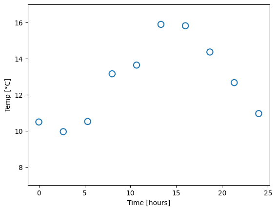
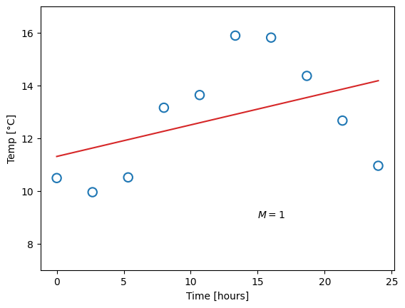

import numpy as np
import matplotlib.pyplot as pltIn [53]:
In [33]:
#xs = np.array([0., 2.67, 5.33, 8., 10.67, 13.33, 16., 18.67, 21.33, 24.])
#ys = 13 + 3*np.sin((np.pi/12)*xs - 0.5*np.pi - 0.7) + np.random.normal(scale=0.35, size=len(xs))
print(ys)[11.02009692 9.75446417 10.85681075 12.20683728 14.21325614 15.39737946
15.92441522 14.63696274 12.14172256 10.43248343]In [56]:
xs = np.array([0., 2.67, 5.33, 8., 10.67, 13.33, 16., 18.67, 21.33, 24.])
ys = np.array([10.49007708, 9.95383366, 10.51591666, 13.15859659, 13.6407803, 15.89547831, 15.82021445, 14.36672616, 12.67044056, 10.95573422])
plt.scatter(xs, ys, marker='o', s=80, facecolors='none', edgecolors='tab:blue', linewidths=1.5)
plt.ylim((7, 17))
plt.xlabel('Time [hours]')
plt.ylabel('Temp [°C]')
plt.show()
In [37]:
def create_plot(polyn_order):
plt.scatter(xs, ys, marker='o', s=80, facecolors='none', edgecolors='tab:blue', linewidths=1.5)
poly = np.polynomial.Polynomial.fit(xs, ys, deg=polyn_order, domain=(xs[0], xs[-1]))
xf, yf = poly.linspace()
plt.plot(xf, yf, color='tab:red')
plt.ylim((7, 17))
plt.xlabel('Time [hours]')
plt.ylabel('Temp [°C]')
plt.text(15, 9, "$M = {}$".format(polyn_order))
plt.show()
for m in [0, 1, 4, 9]:
create_plot(m)



In [67]:
def create_test_plot(polyn_order):
plt.scatter(xs, ys, marker='o', s=80, facecolors='none', edgecolors='tab:blue', linewidths=1.5, alpha=0.5)
for i in range(10):
# Create new random data, fit a model
#xs_new = np.random.uniform(0, 24, size=24)
ys_new = 13 + 3*np.sin((np.pi/12)*xs - 0.5*np.pi - 0.7) + np.random.normal(scale=0.35, size=len(xs))
poly = np.polynomial.Polynomial.fit(xs, ys_new, deg=polyn_order, domain=(xs[0], xs[-1]))
#plt.scatter(xs_test, ys_test, marker='o', s=80, facecolors='none', edgecolors='tab:red', linewidths=1.5)
xf, yf = poly.linspace()
plt.plot(xf, yf, color='tab:red', alpha=0.4)
plt.ylim((7, 17))
plt.xlabel('Time [hours]')
plt.ylabel('Temp [°C]')
plt.text(15, 9, "$M = {}$".format(polyn_order))
plt.show()
for m in [1, 4, 9]:
create_test_plot(m)